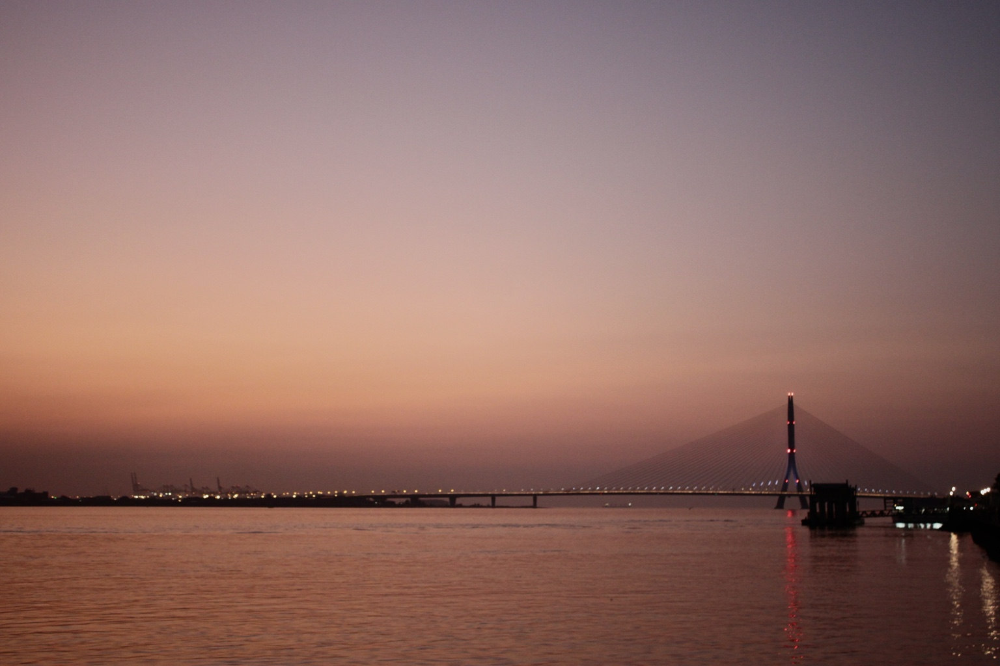

PHOTOGRAPHS & MEMORIES
Ordinary
Frames.
日常拾光
Not every moment needs to be extraordinary to be remembered.
關於路上的風景、偶然的光，和那些想記住的瞬間。
Explore the gallery
01 / THE ARCHIVE
Collected moments.
一個瞬間，一張照片。
每次停下腳步，都有值得留下的理由。
正在整理攝影作品⋯⋯
此分類目前還沒有作品。
03 / ABOUT THE JOURNAL
The beauty in
between.
我喜歡用照片記錄生活中讓自己停下腳步的瞬間。有時是旅行時第一次見到的風景，有時是熟悉地方的另一種光線。這裡收藏的不是完美的畫面，而是當下真實的感受。
A personal collection of places, passing light and moments worth keeping.